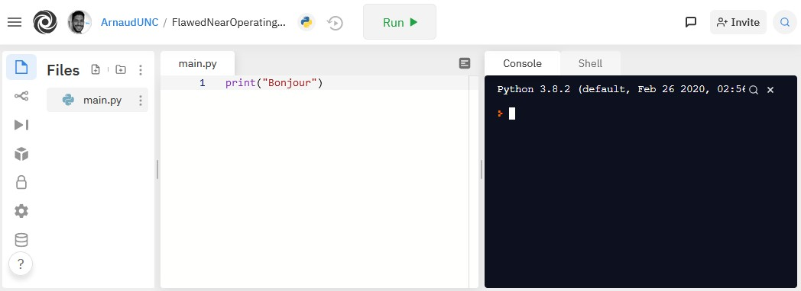

📖 Cours 1: rappels
Python
C'est un langage facile à commencer à utiliser, et en même temps parmi les plus utilisés car efficace et pratique. Il a de nombreuses fonctionnalités et le maîtriser demande du temps et de l'expérience. Il n'est cependant pas nécessaire de le maîtriser pour commencer à s'en servir pour faire des choses utiles.
Il existe plusieurs façons de l'utiliser, dont deux sont présentées ci-dessous.
Execution à distance via replit.com
Dans ce cours nous développons en Python à travers le service en ligne replit.com. Dans cette configuration, replit nous sert à tout: éditeur de code, gestion de projet, et exécution du code.

Cette approche a les avantages suivants:
- Extrême facilité d'utilisation: nous n'avons rien à télécharger, installer ou configurer, ce qui est vraiment très pratique.
- Très grande disponibilité: comme tout se passe en ligne, seule une connexion internet est nécessaire. On peut ainsi développer de n'importe quel appareil: pc, tablettes, et même smartphones.
- Très facile de partager son code avec d'autres personnes
Cette approche a les désavantages suivants:
- Dépendance sur un service tiers et une connexion internet: si replit ou le réseau sont indisponibles pour une raison quelconque, plus rien n'est possible. De plus replit a des fonctionnalités payantes, et pourrait le devenir entièrement.
- Aucune configuration possible: on ne peut utiliser l'éditeur de code qu'on veut, ou la version exacte de Python qu'on veut, aucun contrôle sur les bibliothèques de code disponibles.
- Performances réduites: Python s'éxecute sur les serveurs de replit, qui sont probablement moins puissants qu'une machine ordinaire, pour des raisons de coût. De plus il y a un délai entre le moment où appuie sur le bouton pour exécuter, et le moment où on voit les résultats à l'écran, à cause du délai normal du réseau.
- Certaines fonctionnalités de Python sont indisponibles: développement d'interfaces utilisateur, utilisation de matériel spécifique comme accès à la carte graphique pour des calculs haute performance, intégration dans un projet plus grand, etc...
Replit est destiné avant tout à l'apprentissage, et n'est définitivement pas la façon classique de développer! C'est néanmoins ce que nous utiliserons pour ce cours, pour tous ses avantages.
Execution en local
Pour résumer, tous les avantages et inconvénients sont inversés par rapport à l'option replit. C'est l'option la plus ordinaire pour exécuter Python, et si vous avez votre propre ordi, et que vous souhaitez utiliser cette option pour ce cours, n'hésitez pas à installer et configurer votre propre environnement de développement. Cela demande un peu plus d'efforts (pas tant que ça au final) mais vous apprend à développer de façon plus "sérieuse".

Il vous faut d'abord télécharger gratuitement Python depuis python.org (ou un gestionnaire de paquets sur Linux), l'installer, c'est assez simple. Puis vous pouvez éditer votre code à l'aide d'un éditeur de texte simple (Notepad++ , Sublime Text ...) ou avancé (Microsoft Visual Studio Code, PyCharm...), mais SURTOUT PAS un éditeur de texte riche tel que Microsoft Word, qui sont destinés à éditer visuellement des documents, et pas du code. Tous les outils sont majoritairement gratuits, certains peuvent être payants, ou avoir des fonctionnalités payantes. Elles seront peut-être utiles lorsque vous serez professionnels, pour augmenter votre productivité.
Je laisse cette option aux étudiants plus avancés, si vous avez besoin d'aide ponctuelle sur l'utilisation de ces outils, demandez-moi en TD ou TP, je ferai de mon mieux.
Un langage qui évolue: les versions de Python
Python est lui-même développé et constamment corrigé, amélioré, par de nombreuses personnes, dont l'équipe centrale la Python Software Foundation, qui coordonne tous les efforts de développement. C'est pour cela qu'il y a des versions de Python. Chaque version est de la forme 2.7.1, ou 3.9.2 par exemple. Le premier chiffre est la génération, le second la version majeure, et le troisième la version mineure de correction de bugs.
La génération est une grande catégorie de versions majeures. La génération actuelle est la 3, la 2 étant vieille de plus de 10 ans et sur le point de devenir obsolète. Vous ne devez démarrer aucun nouveau projet de développement Python dans une version de génération 2, à moins d'avoir de bonnes raisons, telles que par exemple pour exécuter du code sur des vieilles machines sur lesquelles seul Python 2 est disponible, ou pour étendre un vieux programme de génération 2.
La version majeure marque, par rapport à la version précédente, l'apparition de nouvelles fonctionnalités, des changements, améliorations, et parfois des suppressions de fonctionnalités jugées obsolètes. Dans la grande majorité des cas, une mise à jour majeure de Python n'entraîne aucun problème pour tout programme Python qui a été développé pour la version majeure précédente (de même génération), mais il faut quand même bien lire les nouveautés de la nouvelle version avant de faire la mise à jour de Python. Parfois certaines précautions sont documentées et sont à prendre, au risque de voir des bugs apparaître dans vos programmes avec la nouvelle version majeure de Python.
La version mineure ne marque aucun ajout, modification ou suppression de fonctionnalité, mais apporte des corrections de bugs et vulnérabilités de sécurité, pour la version majeure correspondante. Vous pouvez donc faire la mise à jour de Python sans souci.
Chaque version majeure est officiellement supportée pour une certaine durée, en général quelques années, ce qui signifie qu'elle recevra des corrections de bugs par la sortie régulières de versions mineures. Passé ce délai, plus aucune version mineure ne sera développée.
En règle générale, on utilise la version la plus récente de Python, il faut donc faire une mise à jour quand c'est nécessaire.
Vue d'ensemble: la programmation, c'est quoi?
Il y a 4 choses centrales en algorithmique et programmation:
- Un langage, par exemple Python.
- Des données,
de formes différentes mais bien déterminées, selon le langage. - Des instructions possibles,
précises et limitées en nombre, selon le langage. - Une ou plusieurs entités qui gèrent les données et exécutent les instructions.
Un programme consiste en une série d'instructions écrites dans le langage utilisé, pour manipuler les données et effectuer diverses actions, que la ou les entités exécutantes vont exécuter.
L'exécutant
L'entité exécutante peut de manière générale être une personne ou une machine, mais nous allons nous limiter aux machines. Pourquoi? Parce qu'elles sont extrêmement rapides, fiables, infatiguables, et ne demandent rien en échange (à part électricité et entretien). En revanche elles sont beaucoup plus limitées que les humains, dans ce qu'elles sont capables de faire. Il faut tout leur expliquer. Et c'est précisément là que l'algorithmique et la programmation sont indispensables. Comment faire faire des choses utiles mais très complexes à une machine à priori simple mais très rapide.
Les données
Les données sont sous formes de variables en mémoire, mais avant cela, elles proviennent de différentes sources. Parmi ces sources, il y a celles que le
programme en lui-même génère, celles que l'utilisateur du programme entre directement ou indirectement, ou celles provenant des fichiers lus par le
programme. Les données générées sont les variables temporaires et données intermédiaires par exemple, ou encore les données déclarées directement dans
le programme, on dit alors alors des données écrites "en dur" dans le programme. Les données qui proviennent de l'utilisateur sont soit récupérées
directement, avec la fonction input() par exemple. Soit si l'utilisateur choisi un fichier que le programme ouvrira et lira. Les fichiers
qui justement forment une autre source possible de données pour un programme. En Python, on les ouvre avec la fonction open(). Les données
peuvent provenir d'autres sources encore, comme du réseau par exemple.
Les types de données
Elles sont de différents natures. A la base, en général, il y a
- Les nombres
souvent séparés en sous-groupes: entiers (typeinten Python), réels (typefloaten Python), imaginaires. - Le texte
qu'on appelle chaîne de caractères, ou string en anglais (typestren Python). - Les booléens
valeurs vrai et faux (typeboolen Python).
Puis ces données peuvent être organisées en structures plus complexes, comme des listes par exemple (type list en Python).
Voici la liste des types en Python que vous connaissez et avez manipulés jusqu'ici:
intfloatboolstrlisttuplerangeNoneType
Les valeurs littérales, ou littéraux
C'est ainsi qu'on appelle les valeurs concrètes des types de base. Exemples de valeurs littérales pour chaque type:
int:
0
2
31
-12
1840float:
0.0
1.204
7.0
-4.5
6000.02bool:
True
False
Aucune autre valeur possiblestr:
""Chaîne vide
''Chaîne vide avec simples guillemets
"Bonjour"
'Bonjour'
"a"list:
[]Liste vide
[2]
[-8, 41]
[True, 12, "Coucou"]Chaque élément d'une liste peut être d'un type différent, ou pas
["Hello", [6, 2, False], True]Une liste qui contient une autre liste à l'indice 1tuple:
()Tuple vide
(2, )Tuple à un élément, on doit mettre la virgule, sinon les parenthèses comptent comme contrôle de priorité des opérateurs
(-8, 41)
(True, 12, "Coucou")Chaque élément d'un tuple peut être d'un type différent, ou pas
("Hello", [6, 2, False], True, (10, 20))Un tuple qui contient une liste à l'indice 1 et un autre tuple à l'indice 3range:
range(8)Séquence de nombres de 0 à 7 inclus.
range(3, 10)Séquence de nombres de 3 à 9 inclus.
range(-8, 10, 2)Séquence de nombres de -8 à 9 inclus, en comptant de 2 en 2. (en réalité le dernier nombre sera 8, car on compte de 2 en 2)NoneType:
None
Aucune autre valeur possible
Certains types n'ont pas de valeurs littérales possibles, car ils sont trop complexes. Une valeur littérale est une façon d'écrire facilement une valeur d'un certain type, mais si le type est trop complexe, ou est défini par l'utilisateur, alors il n'est pas possible de décrire les valeurs de ce type par des littéraux. On verra comment créer des valeurs de ces types complexes lorsqu'on abordera la programmation orientée objets.
Les variables
Les données existent quelque part dans la mémoire de l'ordinateur, et c'est par les variables qu'on peut leur donner des noms à ces données, et y faire référence pour y accéder afin de les lire ou les modifier. On les appelle variables car elles varient justement, c'est à dire que soit les données auxquelles elles font références sont manipulables et peuvent changer. Soit on peut préciser à une variable de faire référence à des données différentes au cours de son exsitence.
Une variable est un nom associé à une zone de la mémoire de l'ordinateur, qui contient une donnée d'un certain type.

Voyons un exemple avec une variable qui pointe vers un int, puis un autre int:
# Crée la variable et la donnée en mémoire
ma_variable = 2
# Modifie la variable mais PAS la donnée en mémoire:
# la variable pointe désormais vers un nouvel emplacement mémoire qui contient 3.
# L'ancienne partie de la mémoire qui contenait 2 est libérée automatiquement, et 2 a disparu
ma_variable = 3
Voyons un exemple avec une variable qui pointe vers des listes:
# Crée la variable et la donnée en mémoire
ma_variable = [5, 7, 1]
# Modifie la variable mais PAS la donnée en mémoire.
# La variable pointe vers une nouvelle liste en mémoire.
ma_variable = [8, 2]
# Modifie la variable mais PAS la donnée en mémoire.
# La variable pointe vers une nouvelle liste en mémoire.
ma_variable = ma_variable + [10] # Vaut [8, 2, 10]
# Modifie la donnée en mémoire mais PAS la variable!!
# La variable pointe TOUJOURS vers la même liste en mémoire que la précédente.
# Cependant celle-ci a changé de valeur.
ma_variable.append(5) # Vaut [8, 2, 10, 5]
Les instructions
Les instructions forment un ensemble fini. Elles sont en général dictées par le langage de programmation utilisé. Le programmeur est limité par cet ensemble. A lui/elle de savoir utiliser ces instructions limitées pour parvenir au final à faire faire à la machine ce qu'il faut pour atteindre le résultat désiré. Chaque langage à ces propres limitations, mais nous sommes chanceux, Python est un langage très expressif, avec de base énormément d'actions possibles. Cela facilite la vie du programmeur. Celui-ci/celle-ci décrit les instructions qui seront ensuite exécutées de façon linéaire, les unes après les autres.
Création / manipulation des variables
Un langage permet aussi aux développeurs de créer des variables, les supprimer, les modifier. Par modifier, cela signifie modifier les données auxquelles
elles font référence, ou alor les faire référencer d'autres données. En Python, c'est l'instruction = qui permet à la fois de créer une
variable, et en même temps de lui assigner une donnée, quelle soit nouvelle ou déjà existante. L'instruction a = 10
créé la variable a si elle n'existe pas encore, puis lui assigne le nombre entier 10.
Les opérateurs
Les opérateurs sont parmis les premières catégories d'instructions qui existent dans un programme. Ils sont très similaires aux opérations mathématiques
classiques, comme addition, multiplication, soustraction, division. De nombreux existent selon chaque langage. Ils peuvent s'appliquer sur un ou deux
opérandes, par exemple l'opérateur - (moins) peut s'appliquer sur deux nombres, ou sur un seul. Les opérateurs peuvent fonctionner sur un
ou plusieurs types de données, par exemple en Python, + (plus) peut s'appliquer entre deux nombres, mais aussi entre deux chaînes de
caractères
Un opérateur est en fait comme une fonction, on lui passes des paramètres (les opérandes) et il calcule un unique résultat. La différence est que l'appel/l'exécution d'un opérateur ne s'écrit pas comme l'appel d'une fonction (cf plus bas pour les fonctions).
# Opérateur + entre nombres
5 + 2.8 - 100
# Opérateur + entre chaînes de caractères
"Bonjour" + " tout " + " le monde"
# Ces deux lignes ne sont pas identiques:
# l'une donne le nombre 15, alors que la seconde donne la chaîne "510"
5 + 10
"5" + "10"
Les expressions
Une expression est une suite, aussi courte ou complexe que nécessaire, de:
- valeurs littérales
- d'opérateurs et parenthèses pour contrôler les priorités de calcul
- de variables
- d'appels de fonctions,
qui au final s'évalue à UNE SEULE VALEUR unique, et qui est d'un certain type. Par exemple:
# Chaque valeur littérale est une expression à part entière:
1 # expression de type int
8 # type int
"Coucou" # type str
True # type bool
[8, 7, -4] # type list
# On peut ajouter des opérateurs
1 + 1 # type int
(8 - 10) * 12 # type int
True and False # type bool
(True or not False) and True # type bool
"Bonjour " + "tout le monde" # type str
[0, 1] + [50, "Hello"] # type list
# On peut ajouter des variables
mon_int = 10 # ceci n'est PAS une expression car contient l'instruction d'affectation
mon_int # expression de type int
8 + mon_int * 2.5 # type float
[7, mon_int] + ["truc"] # type list
mon_int == 10 # type bool
# On peut ajouter des appels de fonctions
float("5.0") # type float, vaut 5.0
int("8") + mon_int # type int, vaut 18
list(range(mon_int)) + [50, 60] # type list, vaut [0,1,2,3,4,5,6,7,8,9,50,60]
Ordre d'execution des instructions
L'ordre d'exécutions des instructions d'un programme compte. Un programme arriverait à un résultat totalement différent si l'ordre de ses instructions
n'était pas respecté. Les instructions sont écrites sous forme de lignes, ligne après ligne, et elles sont exécutées du haut vers le bas. Chaque ligne
peut elle-même comporter plusieurs instructions. Dans ce cas, il existe des règles et des mécanismes pour définir l'ordre d'exécution des instructions
au sein d'une ligne. Par exemple les opérateurs ont des priorités d'exécution, prédéfinies par le langage, par exemple les *
(multiplications) sont exécutées avant les + (additions). Les parenthèses permettent de contrôler l'ordre d'exécution. Et lorsque deux
instructions ou plus dans une ligne ont la même priorité au moment de leur exécution, elles sont exécutées de gauche à droite.
Les structures de contrôle
Elles nous permettent de structurer notre programme en différentes parties, qui vont s'exécuter dans un ordre différent de celui linéaire.
Les principales structures de contrôle sont:
- si - sinon (if - else en anglais)
Les actions à exécuter dans certaines conditions. En Python cela s'écrit
if condition: instruction instruction instruction ... else: instruction instruction instruction ... - boucles pour et tant-que (for et while en anglais)
Répéter les mêmes instructions un certain nombre de fois, et potentiellement avec des données différentes à chaque fois.
for variable in sequence: instruction instruction instruction ... while condition: instruction instruction instruction ...Une séquence est une valeur / expression de type list, tuple, str ou range.
Les fonctions
Une forme d'instruction plus sophistiquée que les précédentes sont les fonctions. Une fonction doit d'abord être déclarée par le programmeur avant de pouvoir être utilisée. C'est un groupe d'instructions, auquel on donne un nom, et qu'on peut paramétrer afin que certaines données soient potentiellement différentes chaque fois qu'on exécutera ce groupe d'instructions. Une fonction retourne un seul et unique résultat: il peut être non défini, ou une valeur unique. Puis pour exécuter ce groupe d'instructions à chaque endroit du programme qu'il en a besoin, le programmeur n'a plus qu'à écrire le nom de la fonction et les paramètres qui lui sont nécessaires: on dit qu'on appelle une fonction lorsqu'on l'exécute.
Pour utiliser une fonction, ça se passe toujours en deux étapes:
- Déclaration de la fonction, avec le mot-clé
def. Elle est unique, et doit toujours être déclarée avant la seconde étape - Utilisation de la fonction, on dit aussi appel ou exécution de la fonction. On peut appeler une fonction autant de fois que nécessaire dans notre programme, après la définition de la fonction.


Les fonctions ont plusieurs avantages:
- En un seul nom, en une seule action, on peut exécuter une série d'autres instructions.
(en tout cas visuellement on ne voit qu'une action écrite, mais la machine doit toujours exécuter toutes les instructions contenues dans la fonction à chacun de ses appels) - On évite de recopier les mêmes instructions encore et encore, quand on a besoin defaire les mêms actions.
- Avec les paramètres, on peut influer sur le comportement de la fonction, ou la faire travailler avec d'autres données.
Par exemple, le code ci-dessous déclare une fonction nommée ma_fonction, qui prend deux paramètres nommés param1 et param2.
Puis on exécute ma_fonction avec la valeur 8 pour param1, et la chaîne de caractères "Bonjour" pour
param2. Après son exécution, la valeur qu'elle retourne est assignée à la variable ma_variable.
def ma_fonction(param1, param2):
instruction
instruction
instruction
...
return résultat
ma_variable = ma_fonction(8, "Bonjour")
En plus de pouvoir définir et appeler ses propres fonctions, le programmeur peut aussi faire appel à des fonctions prédéfinies, que le langage inclut
d'avance, afin d'étendre encore l'ensemble des instructions possibles. Par exemple print(), input(), ou encore
str().